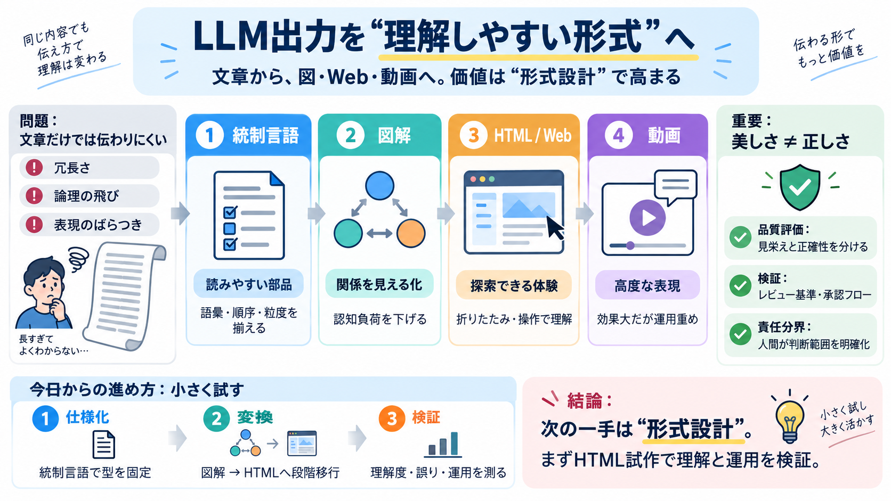

How I use LLMs
# How I use LLMs ## Channel: Andrej Karpathy 1.71M subscribers 68K likes ### Description 2,757,273 views Posted: 2025-0…

LLMの価値は「正しい文章を返す」から一歩進み、出力を図・Web・動画など“理解しやすい形”へ変換して運用することにあります。
自由形式の文章は、冗長さ・論理の飛び・表現のばらつきで読み手の理解コストが残りやすくなります。
LLMが“理解可能な表現”を作るほど、人は成果物そのものより意図・品質・任せる範囲の判断に寄っていきます。
小さく試すなら「出力形式を変える」ことが最短ルートです。文章だけで頑張らず、図解・HTMLへ段階的に移行します。
投稿が示す方向性は、(1)統制言語、(2)図解、(3)HTML、(4)動画、の組み合わせにあります。
出力形式を変えると、読み手の認知負荷が下がるだけでなく、機械的な検証・再利用にもつながる可能性があります。
統制言語は文章を“読みやすい部品”にし、図・HTMLは“理解の経路”を作ります。目的に応じて住み分けるのが要点です。
最初は文章から頑張らず、出力形式だけを変えて検証します。誤り対策のレビュー基準も同時に用意します。
図やHTMLは理解を補助しやすい一方、動画は多工程・評価・法務論点が増えます。勝ち筋を前提に選びます。
統制言語や図解は読みやすさを改善しても、内容の誤りを自動で排除するわけではありません。動画・Webほどリスクは増え得ます。
提示された情報は方向性中心で、LLMの種類・プロンプト例・評価方法・失敗パターンなどの具体が不足しがちです。
LLMの出力を“理解しやすくする”中心課題は、文章そのものではなく表現形式の最適化です。統制言語→図解→HTML→必要なら動画、の順で小さく検証し、必ず検証・承認・責任分界を設計しましょう。
# How I use LLMs ## Channel: Andrej Karpathy 1.71M subscribers 68K likes ### Description 2,757,273 views Posted: 2025-0…
Logo for Decart Logo for Standard Intelligence Logo for Perplexity Logo for Adept ## Andrej Karpathy's Portfolio Unicor…
Voiceover generation with Eleven Labs API offers content creators an innovative and efficient solution to enhance their …
Bring Your Own LLM lets teams prompt their own approved model directly from a Stensul template, so the creation, governa…
| 3/31/2026 | Series C | Subscribe to see more | $XXM | Subscribe to see more | Subscribe to see more | 10 | | 2/24/2026…